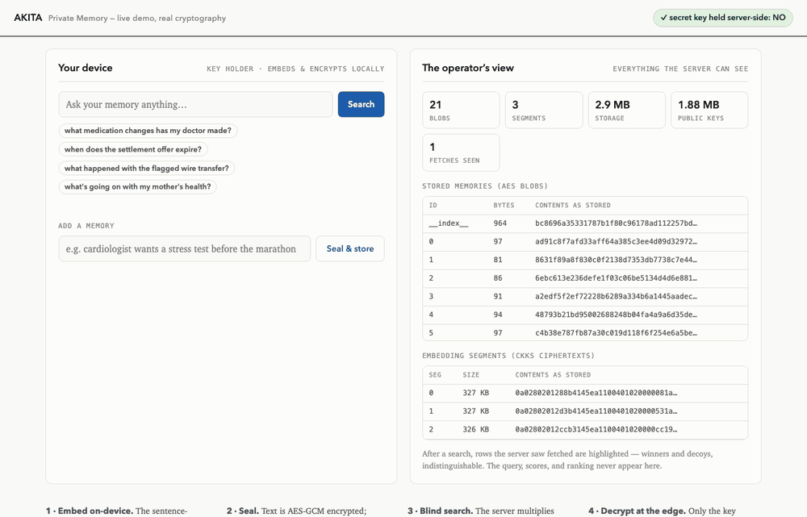

Akita gives AI apps per-user memory and search the operator
provably cannot read — text sealed with AES-GCM, embeddings
encrypted with CKKS, keys that never leave the user's side. Recall is
fast enough to use, and every number below was measured, not promised.
v0.1 prototype · real cryptography · honest measurements · not audited — don't protect production data with it yet.

The demo, live: your device on the left — the operator's entire view of you on the right.
Runs locally with one command; real cryptography, no mocks.
~95 ms
warm semantic recall, end to end
80/80
top-10 results identical to plaintext
~$0.0002
per encrypted search, measured
0
secret keys held server-side
How it works
1 · Embed on-device The sentence-transformer runs on the key holder's side; plaintext never leaves.
2 · Seal Text is AES-GCM encrypted; embeddings are CKKS-encrypted (128-bit, hardened parameters).
3 · Blind search The server multiplies ciphertexts it cannot read — one operation per segment, no rotations.
4 · Decrypt at the edge Only the key holder decrypts scores and picks the winners.
Stated plainly, because trust products should say it themselves: Akita
protects memory storage and search — once your app decrypts a memory
into an LLM prompt, privacy depends on where inference runs. Search
download scales with corpus size in v0; fetch patterns are padded with
decoys pending a PIR stage; key loss means memory loss. Full caveats in
the security notes.